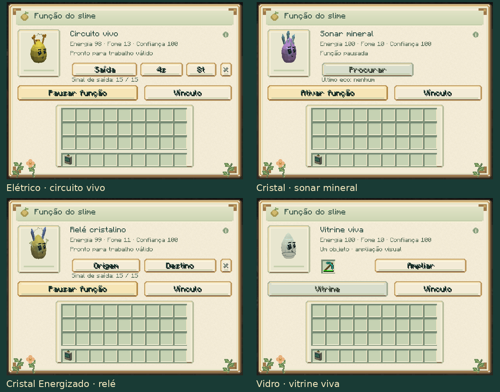
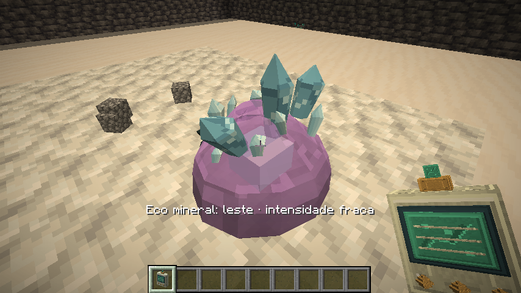
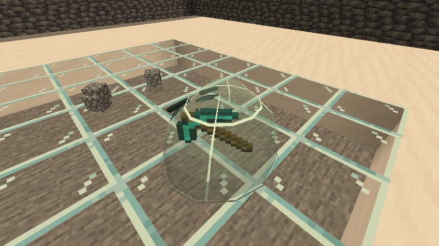

Circuitos, sonar e vitrine
Guia do mod · Funções individuais · Treino
Elétrico, Cristal, Cristal Energizado e Vidro têm funções próprias no painel Função, acessado ao agachar e usar o analisador no seu slime.

| Slime | Função | Treino necessário | Custo |
|---|---|---|---|
| Elétrico | Circuito vivo | 20 pontos | 2 de energia e +1 de fome por pulso aceito |
| Cristal | Sonar mineral | 20 pontos | 4 de energia e +2 de fome ao encontrar um eco |
| Cristal Energizado | Relé cristalino | 40 pontos | 1 de energia ao iniciar e a cada segundo de sinal ativo |
| Vidro | Vitrine viva | 0 | Exposição e ampliação sem custo de energia |
Os três trabalhos ativos exigem adulto calmo, confiança 40, energia mínima 30, fome até 60 e conforto 40. Começam pausados. O cuidador precisa ter permissão de construção e permanecer conectado na mesma dimensão para os circuitos.
Elétrico: pulsos ajustáveis
- No painel, pressione Saída.
- Use o analisador no piso escolhido, deixando livre o espaço acima.
- Mantenha o slime a até seis blocos da saída, com visão livre.
- Ajuste os dois botões ao lado e pressione Ativar função.
O intervalo alterna entre 1, 2, 4 e 8 segundos. A duração alterna entre 2, 4, 8 e 10 ticks: de 0,1 a 0,5 segundo, a 20 ticks por segundo. O padrão é intervalo de dois segundos e duração de quatro ticks. Cada ajuste pausa o trabalho para permitir concluir a configuração.
A saída emite intensidade 15 e pode alimentar redstone, um dropper, pistões e outros mecanismos próximos. O pequeno ponto de saída aparece durante o pulso. Se o espaço estiver ocupado, o slime aguarda sem substituir o bloco ou cobrar pelo pulso recusado. O botão × limpa o vínculo e pausa a função.
Cristal: encontrar concentrações minerais
Ative a função e pressione Procurar. O painel fecha para mostrar a pulsação e a mensagem com direção e intensidade: fraca, média ou forte. O levantamento alcança até 12 blocos, inclusive através de pedra, e procura concentrações de pelo menos quatro blocos minerais no mesmo setor direcional.
São reconhecidos minérios e blocos de ametista. Um veio isolado pode não gerar um eco significativo; a indicação ajuda a escolher uma direção de exploração. O trabalho preserva os blocos encontrados e respeita as regiões protegidas. Opera somente nos chunks já carregados.
Cada levantamento tem dez segundos de recuperação. Um levantamento sem eco mantém essa recuperação e conserva energia e alimentação. O painel mostra a intensidade do último eco; essa indicação é temporária, enquanto a recuperação é preservada no save e na cápsula.

Cristal Energizado: transmitir um sinal
- Pressione Origem e use o analisador no bloco de entrada, como uma alavanca, placa de pressão ou trecho de redstone.
- Pressione Destino e escolha o piso de uma saída livre.
- Deixe o slime a até seis blocos da saída e ative a função.
Entrada e saída precisam estar na mesma dimensão, separadas por 4 a 32 blocos, e ambas devem estar carregadas. O relé preserva a intensidade analógica de 0 a 15. Desligar a entrada desliga a saída; entrada sem sinal não cobra energia. É possível conectar circuitos que usam comparadores e sensores de intensidade.
A saída se apaga automaticamente ao pausar, capturar ou remover o slime,
ou quando o cuidador fica indisponível. Os pontos de saída são temporários;
um sinal salvo sem a sua fonte válida não alimenta mecanismos ao recarregar.
Os circuitos respeitam mobGriefing, permissões e a proteção das arenas.
Vidro: expor um objeto real
Coloque um objeto no compartimento da vitrine. Ele aparece girando dentro do corpo transparente do slime. Ampliar aumenta a exibição, e Tamanho normal restaura a escala. O núcleo fica oculto enquanto o objeto ocupa a vitrine.

A vitrine é passiva: basta confiança 40 para guardar o objeto pelo painel. A ampliação é visual e conserva quantidade, durabilidade, nome e encantamentos. O mesmo objeto pode ser retirado normalmente. Cápsulas e recipientes com inventários internos são recusados.
Capturar e soltar conserva o objeto e o tamanho escolhido. Ao morrer, o slime solta seus pertences. Cargas antigas continuam disponíveis para retirada, mesmo que tenham sido guardadas antes de o indivíduo adquirir essa função.